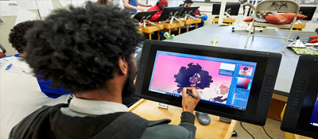

Brooklyn
Kingsborough Community College
Graphic Design & Illustration
The Art Department at Kingsborough Community College is dedicated to providing a comprehensive program of study in the visual arts, designed to prepare students of diverse life experience for either continued baccalaureate study or immediate entry into a range of visual art professions.

Kingsborough Community College
Animation
The Animation concentration is part of the Graphic Design and Illustration major. Students learn traditional, hand-drawn animation in a digital environment, as well as storyboarding and 3D animation.